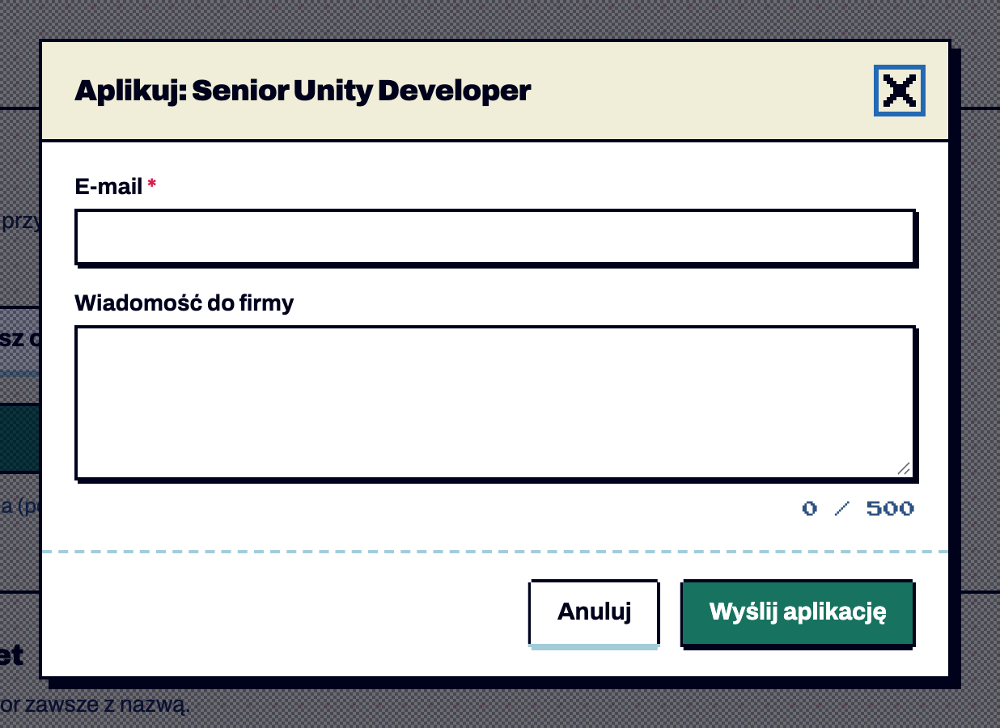
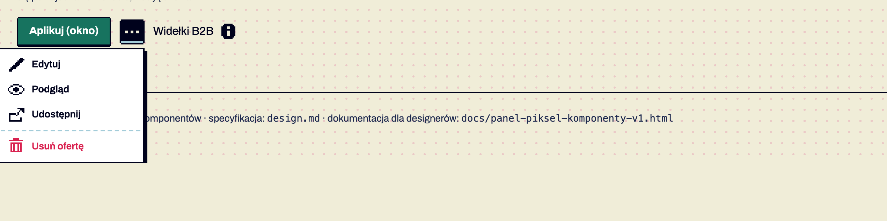
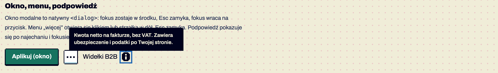

Komponenty / Nakładki
Nakładki: okno, szuflada, menu, podpowiedź
testowy Okno, szuflada, menu, podpowiedź · od 1.7 — brakuje: użycie na 2 ekranach, test z czytnikiem
testowy Przycisk-ikona · od 1.7 — brakuje: użycie na 2 ekranach, test z czytnikiem
Treść nad stroną. Okno modalne — zadanie, które musi przerwać pracę (aplikowanie, potwierdzenie usunięcia). Szuflada — panel z boku (filtry na telefonie, K26). Menu „więcej” — 3–6 rzadszych akcji przy obiekcie. Podpowiedź — krótkie dodatkowe wyjaśnienie. Do potwierdzenia akcji bez przerywania pracy użyj powiadomienia (K22). Potwierdzone w dokumentacji S01 §6.16.



Anatomia i komponenty składowe
| Część / rola | Wymagana / opcjonalna | Składnik / źródło | Co można zmienić / status |
|---|---|---|---|
| okno: nagłówek (h2 + zamknij), treść, stopka | wymagane | dialog.modal + .modal-head/.modal-body/.modal-foot | Potwierdzone w dokumentacji |
| tło przyciemnione ditherem | wymagane | ::backdrop | Potwierdzone w dokumentacji |
| menu: przycisk-ikona + lista | wymagane | .menu + .menu-list | Potwierdzone w dokumentacji |
| akcja niszcząca na końcu za linią | opcjonalna | .is-danger + hr | Potwierdzone w dokumentacji |
| podpowiedź: przycisk + dymek | wymagane | .tip + .tip-body[role=tooltip] | Potwierdzone w dokumentacji |
| przycisk-ikona 36 px | wymagany w nakładkach | .icon-btn (+ .is-boxed) | Potwierdzone w dokumentacji |
Warianty i zastosowanie
| Oś | Wartość | Kiedy użyć | Co się zmienia | Ograniczenia / status / źródło |
|---|---|---|---|---|
| rodzaj | okno | zadanie przerywające | do 560 px, cień 6 px | Potwierdzone w dokumentacji |
| rodzaj | szuflada | panel boczny | od prawej, do 380 px | Potwierdzone w dokumentacji |
| rodzaj | menu | rzadsze akcje | min. 200 px, cień 4 px, wybrana pozycja odwrócona | Potwierdzone w dokumentacji |
| rodzaj | podpowiedź | wyjaśnienie | granatowy dymek do 260 px nad przyciskiem | Potwierdzone w dokumentacji |
Zachowanie, treści i lokalizacja
Okno: fokus w środku, Esc i klik w tło zamykają, fokus wraca na przycisk (natywny <dialog>). Menu: klik lub strzałka w dół otwiera, strzałki przechodzą, Esc zamyka i wraca fokusem. Podpowiedź: najechanie i fokus pokazują, Esc chowa. Sprawdzone testem automatycznym Potwierdzone w dokumentacji.
Zalecane i niewskazane
| Zalecane — przykład | Niewskazane — przykład | Powód / status / źródło |
|---|---|---|
| natywny dialog | div z z-index 9999 | pułapka fokusu i Esc za darmo Potwierdzone w dokumentacji |
| jedna akcja główna w stopce okna | dwa zielone przyciski | Potwierdzone w dokumentacji |
| podpowiedź z dodatkową informacją | podpowiedź z treścią niezbędną do zadania | na telefonie najechania nie ma Potwierdzone w dokumentacji |
| menu jako disclosure (przyciski) | role="menu" bez pełnej obsługi klawiatury | Potwierdzone w dokumentacji decyzja implementacyjna |
Tokeny i style
| Zastosowanie | Token | Tryb / wariant | Wartość | Źródło | Status |
|---|---|---|---|---|---|
| warstwa menu / podpowiedzi | --z-dropdown / --z-tooltip | 100 / 500 | S02 | Potwierdzone w dokumentacji | |
| okno | top layer | — | natywny dialog | Potwierdzone w dokumentacji | |
| ruch wejścia | --motion-slow + --ease-steps | 200 ms, steps(3) | S02 | Potwierdzone w dokumentacji |
Wymiary, odległości i układ
| Elementy / krawędzie | Wariant | Wartość / relacja | Token | Reguła / źródło / dokładność |
|---|---|---|---|---|
| okno | — | nagłówek 12/20, treść 20, stopka 16×20 | — | Potwierdzone w dokumentacji |
| menu | — | pozycje 36 px, odstęp 4 px od przycisku | — | Potwierdzone w dokumentacji |
| podpowiedź | — | przesuwa się, by nie wyjść poza ekran | — | Potwierdzone w dokumentacji skrypt |
Typografia
| Rola tekstu | Styl | Font / weight | Rozmiar | Interlinia | Tracking | Kolor / zachowanie / status |
|---|---|---|---|---|---|---|
| tytuł okna | — | Archivo 900 | 18 | 28 | −0.45px | Potwierdzone w dokumentacji |
| pozycja menu | — | Archivo 600 | 14 | — | — | Potwierdzone w dokumentacji |
| podpowiedź | — | Archivo 600 | 13 | 18 | — | --on-ink Potwierdzone w dokumentacji |
Przykład na żywo
Ta sama sekcja co w examples/komponenty.html — działa na systemie 1.11.0. Przełącz motyw w nagłówku, żeby zobaczyć tryb ciemny.
Okno, menu, podpowiedź
Okno modalne to natywny <dialog>: fokus zostaje w środku, Esc zamyka, fokus wraca na przycisk. Menu „więcej” otwiera się klikiem lub strzałką w dół, Esc zamyka. Podpowiedź pokazuje się po najechaniu i fokusie, Esc ją chowa.
Kod przykładu
<section class="ex" id="nakladki" aria-labelledby="h-ov">
<h2 id="h-ov">Okno, menu, podpowiedź</h2>
<p>Okno modalne to natywny <code><dialog></code>: fokus zostaje w środku, Esc zamyka, fokus wraca na przycisk. Menu „więcej” otwiera się klikiem lub strzałką w dół, Esc zamyka. Podpowiedź pokazuje się po najechaniu i fokusie, Esc ją chowa.</p>
<div class="row">
<button class="btn btn-primary" type="button" data-dialog-open="okno-aplikuj">Aplikuj (okno)</button>
<div class="menu"><button class="icon-btn is-boxed" type="button" aria-expanded="false" aria-controls="menu-oferta" aria-label="Więcej akcji dla oferty"><span class="icon i-more" aria-hidden="true"></span></button>
<ul class="menu-list" id="menu-oferta" hidden>
<li><button type="button"><span class="icon i-edit" aria-hidden="true"></span>Edytuj</button></li>
<li><button type="button"><span class="icon i-eye" aria-hidden="true"></span>Podgląd</button></li>
<li><button type="button"><span class="icon i-external" aria-hidden="true"></span>Udostępnij</button></li>
<li><hr></li>
<li><button type="button" class="is-danger"><span class="icon i-trash" aria-hidden="true"></span>Usuń ofertę</button></li>
</ul></div>
<span>Widełki B2B <span class="tip"><button class="icon-btn" type="button" aria-describedby="tip-b2b" aria-label="Co to znaczy?"><span class="icon i-info" aria-hidden="true"></span></button><span class="tip-body" role="tooltip" id="tip-b2b">Kwota netto na fakturze, bez VAT. Zawiera ubezpieczenie i podatki po Twojej stronie.</span></span></span>
</div>
</section>Właściwości i atrybuty
| Właściwość / atrybut | Typ | Wartości pokazane / opisane | Domyślna | Efekt i zastosowanie | Zależności / status / źródło |
|---|---|---|---|---|---|
| data-dialog-open | id | okno-aplikuj | — | otwiera | Potwierdzone w dokumentacji |
| data-dialog-close | flaga | — | — | zamyka | Potwierdzone w dokumentacji |
| aria-expanded + aria-controls | menu | false/true | false | stan menu | Potwierdzone w dokumentacji |
| aria-describedby | podpowiedź | id dymka | — | powiązanie | Potwierdzone w dokumentacji |
Specyfikacja (design.md §6.16)
| Element | Kod | Zasady |
|---|---|---|
| Okno modalne | <dialog class="modal" aria-labelledby> + .modal-head (h2 + .icon-btn[data-dialog-close]) + .modal-body + .modal-foot; otwiera button[data-dialog-open="id"] | natywny showModal(): fokus w środku, Esc i klik w tło zamykają, fokus wraca na przycisk; szerokość do 560 px, cień 6 px, tło przyciemnione ditherem; jedna akcja główna w stopce; tylko dla zadań, które muszą przerwać pracę |
| Szuflada | <dialog class="drawer" data-drawer-source="id-formularza"> + [data-drawer-slot] | od prawej, do 380 px; formularz z data-drawer-form przenoszony do szuflady na czas otwarcia (ten sam stan filtrów); „Pokaż N ofert” zamyka szufladę |
| Menu „więcej” | .menu > button.icon-btn[aria-expanded][aria-controls] + ul.menu-list[hidden] | wzorzec disclosure (nie role="menu"); strzałka w dół otwiera i ustawia fokus, strzałki przechodzą, Esc zamyka i wraca fokusem; akcja niszcząca .is-danger na końcu za <hr> |
| Podpowiedź | .tip > button[aria-describedby] + .tip-body[role=tooltip] | po najechaniu i fokusie; Esc chowa; dymek można najechać; max 260 px; tylko dodatkowa informacja — nic, czego nie da się zrobić bez niej |
| Przycisk-ikona | .icon-btn (+ .is-boxed) | 36×36 px, zawsze z aria-label |
Cel: WCAG 2.2 AA. Statyczne materiały i testy automatyczne w Chrome nie dowodzą zgodności — miejsca oznaczone „Do testu we wdrożeniu” wymagają testu z czytnikiem ekranu (design.md §0.6).
| Obszar | Ustalenie lub wymaganie | Dowód / status | Kryterium / wzorzec | Jak sprawdzić |
|---|---|---|---|---|
| okno | dialog showModal + aria-labelledby | Potwierdzone w dokumentacji | APG Dialog (Modal); WCAG 2.4.3 | czytnik Do testu we wdrożeniu |
| menu | wzorzec disclosure, aria-expanded | Potwierdzone w dokumentacji | APG Disclosure; WCAG 4.1.2 | klawiatura, czytnik Do testu we wdrożeniu |
| podpowiedź | Esc chowa, dymek można najechać, nie znika sam | Potwierdzone w dokumentacji | WCAG 1.4.13 (AA) | ręcznie |
| przycisk-ikona | 36 px + aria-label | Potwierdzone w dokumentacji | WCAG 2.5.8, 4.1.2 | — |
Źródła
S01 §6.16; S03 ui-controls.js; S20 (sekcja Nakładki).